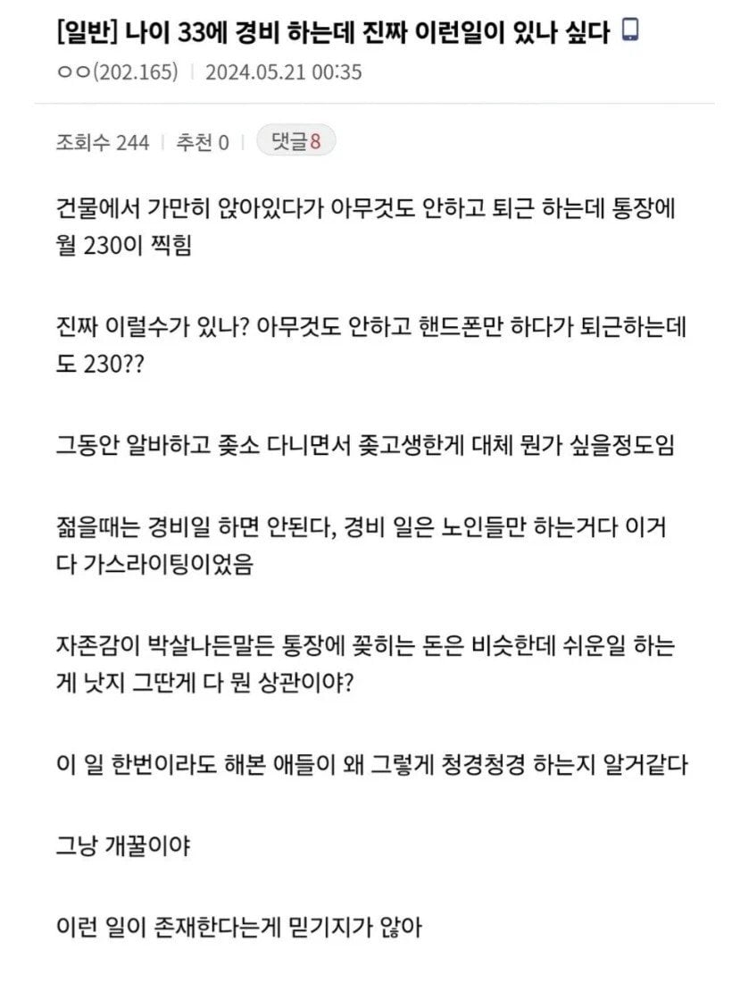

이래도 지랄 저래도 지랄
위에 발작하는애들 한트럭인게 개웃기네ㅋㅋㅋㅋ
계속 성장하면서 살아온사람들은 저런직업 못버팀
보통 현타온다고 표현하지
그냥 그게 맞는 사람이 하는거지 머
공기업 교대근무 하는데 뭐 하는게 없어서 심심하긴하더라 자격증 따고 어학공부하고 하는중
말하는 거 보니까 너는 저런직업 잘 버티겠다
결정적으로, 통장 꽂히는게 230이랬으니.. 세후 230이겠네.. 최저 이상이네 ㅋ
12시간 근무니까
다만 대체되기도 쉬우니 안하는거지...
월 2-3천은 벌어야 생활 가능한 거 아님?
7~8백 정도면 입에 풀칠 할 정도는 됨
월 7백이면 연봉 1억돌파
서민 커트라인이지
그거 받아서 3끼 라면만 먹는 거임?
하면 한다고 ㅈㄹ 안하면 안한다고 ㅈㄹ
저긴 진짜 편한데인가보네
우리 입찰된 곳은 좆같다던데 ㅋㅋ
청원경찰 하던 아는 놈 있었는데
같이 일하는 사람들 모두 자격증을 준비하던, 공무원을 준비하던 뭐라도 하면서 한다던데
20대부터 경비경력 쌓으면서 운동하고 자격증 딴애들은 대놓고 개꿀직으로 정년 보장받으면서 다닐수있음ㅋㅋ
경비도 경비 나름의 경력이 쌓이나
경비지도사라고 관리직으로 올라가는 길이 있긴 함
경비지도사는 무조건 기계경비나 특수경비를 따세욧
경비가 보통 12시간 교대 아닌가?
시설근무도 비슷하지ㅎㅎㅎ그래서 늪이라고부름..한번들어가면 나가기 힘들거든
청경이나 뭐저런일하는 젊은 사람은 진짜 그냥 230에 안빈하게 걍 혼자 만족하며살거나
자기일이 빨리끝나고 업무 스트레스가 낮으니깐, 저녁에는 자기꿈을 위해서 자기일 하는 사람 많음 ㅇㅇ
대충 저런 등대지기 같은 일하는데 공무원이라 호봉 승진은계속됨..
현직 공기업 정규직 7년차 보안 경비인데요. 회사마다 다르겠지만 신의직장이 존재한다면 우리회사가 아닐까 싶을 정도로 저 글에 공감합니다. 공기업 계약직 사무 , 전기ㅈ소기업, 화학연구소 등등 회사 다니다가 일도 ㅈ같고 사람도 ㅈ같은 와중에 우연치 않게 경비 뽑는대서 정말 운이 좋게 정규직으로 입사했는데 일단 월급 쌔고 성과급에 연차수당에 회사복지 및 카드 근무환경 조건 등등 사람 치일일 없고 업무 및 성과 스트레스1도 없고 야근 전혀 없고 7년째 다니는 중인데 정년보장이라 정년까지 말뚝박을생각입니다. 전 주변에서 간혹 무슨일하냐고 물어 보면 한점부끄럼없이 경비한다고 합니다. 무시하거나 경비 그거 경력되냐 돈되냐고 이야기 하면 그냥 회사 까고 연봉깝니다. 그럼 찍소리 못합니다.
신이시여 이런직장을 저에게 주셔서 감사합니다.
좋네 부럽다
공유좀
경력되냐 돈되냐
나도 알려줘
고오급경비
20년뒤에 일반회사다닌 친구랑 연봉 2배 차이나버림ㅇㅇ
하지만 30년뒤에도 일할수있죠?
20년 뒤엔 걔도 경비하고 있음
울회사 청경은 안쉬운듯.. 차량검사도 해야되고 순찰도 돌고 당직도 서야하고
230만원 중에 원룸 월세 60만원. (고시원이면 40만원.) 식비 40만원, 경조사비 10만원, 인터넷 핸드폰 기타요금 20만원, 취미 및 외식 30만원 잡으면 대략 70-90만원 남음.
이거 전부 SCHD나 QQQ 넣으면 20년 뒤에 3-5억대로 모을 수 있다. 그거 모아서 일 그만 두고 전부 커버드콜 넣고 배당 받아서 놀면 됨.
20년뒤면 3억 가치가 반토막 이상 날것 같은데?
Schd 투자한다고 생각했을 때 배당 재투자 안한다고 보고 보수적으로 잡으면 4억이고, 배당재투자하고 평균적으로 보면 6억임. 자산 6억에 배당 매달 100만원씩 나옴.
Qqq 투자한다고 생각하면 보수적으로 6억, 평균적으로 9억 기대 가능함.
대략 6억이라 치고, 6억 커버드콜 넣으면 1년에 6000만원 배당 수익 나오는데 20년 뒤에 물가상승률 감안하면 3300-4000만원 정도 됨. 아무 것도 안 해도 연봉 3500만원 준다는데 애미 없는 소리 찍찍하는거 보면 부자되긴 글렀네;;;
섹스섹스보지털 ㅋ
20년뒤까지 일할생각이면 걍 나스닥 가즈아
결혼 집 다 포기하고 모으면 가능은 할텐데....
집사고 애낳는순간 어려운거같더라
근데 경비원 일도 뭐 자격이나 그런 게 필요하나?
젊은 사람들을 시켜줌?
어디 높으신 분 보디가드나 그에 준하는 급이 아닌 하청 경비 같으면 덩치는 좀 커야 했는데, 요즘엔 할려는 사람이 없어서 아무나 다 시켜준데
일반경비 교육 몇일짜리 들어야됨
뭐 좃소가서 안전장비 없이 10년 20년 일하면 자기 잘전되고 월급 수배 올려주겠냐? 좃소가도 최저임금 받는건 똑같은데 그냥 편한 일 하면 되는거지
신선?인지 건어물?인지 모름